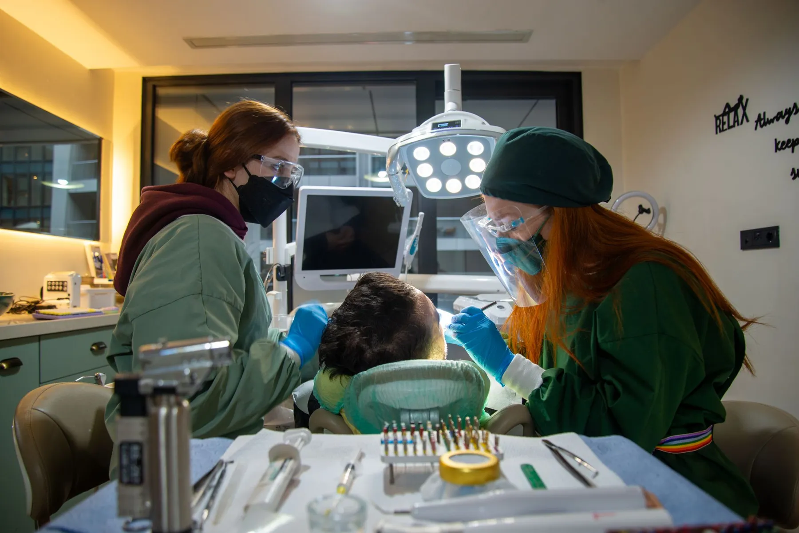
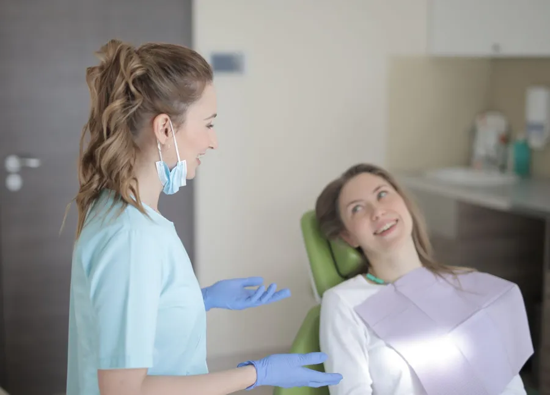
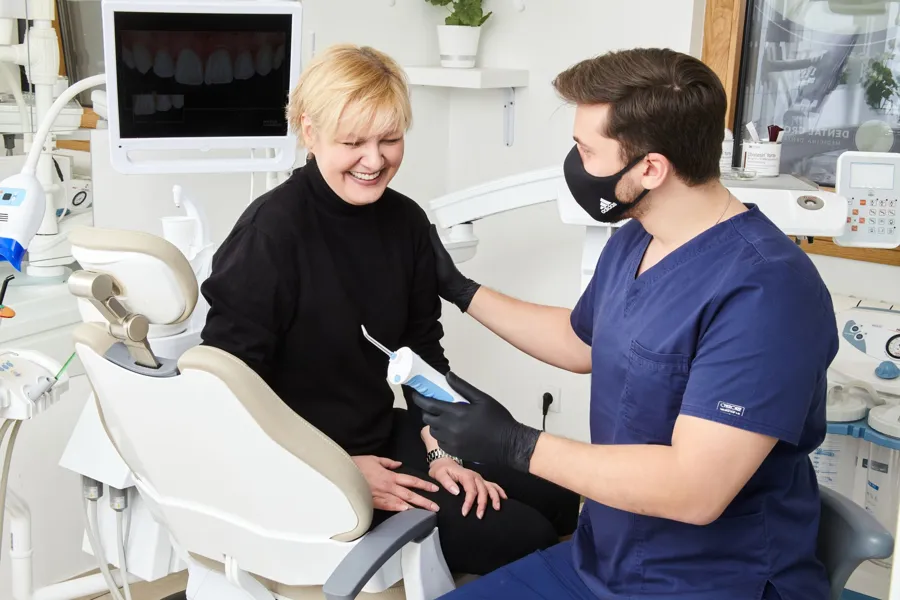
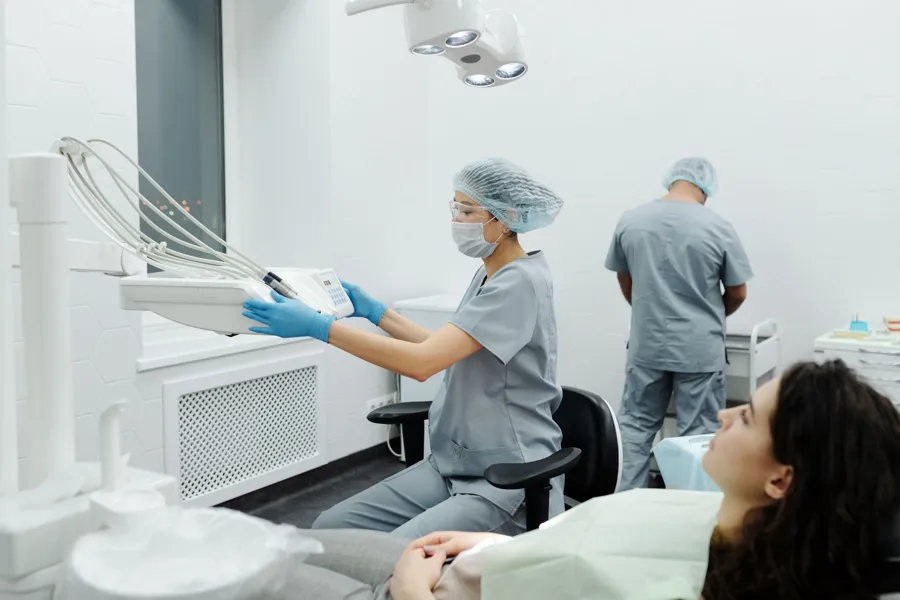
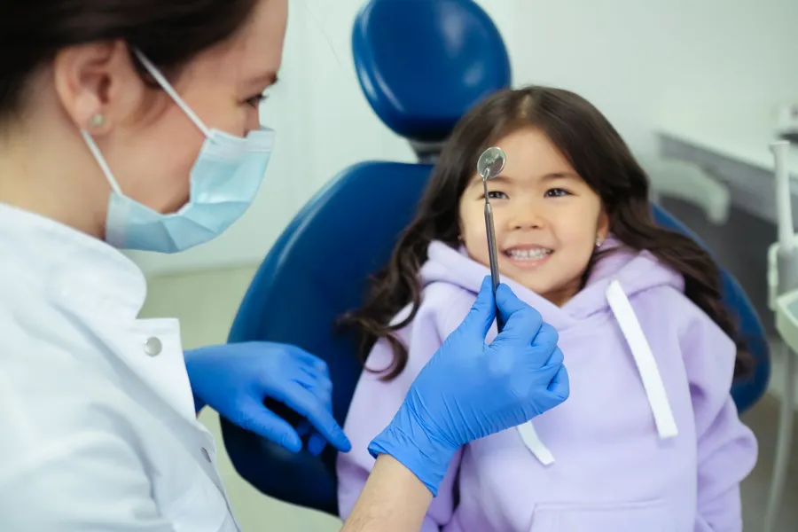
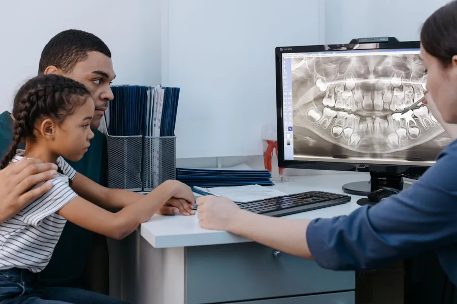
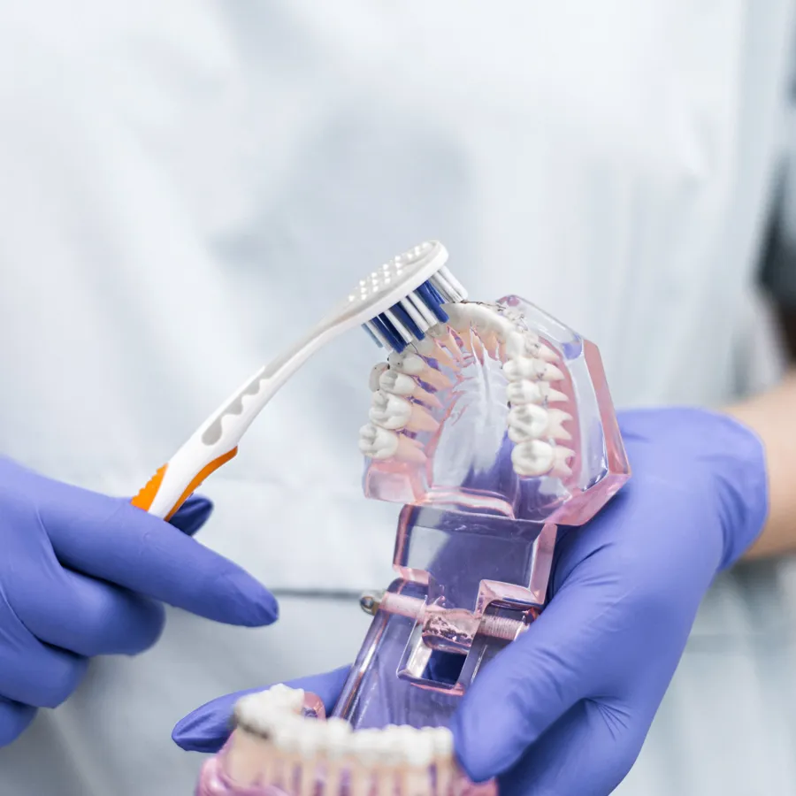
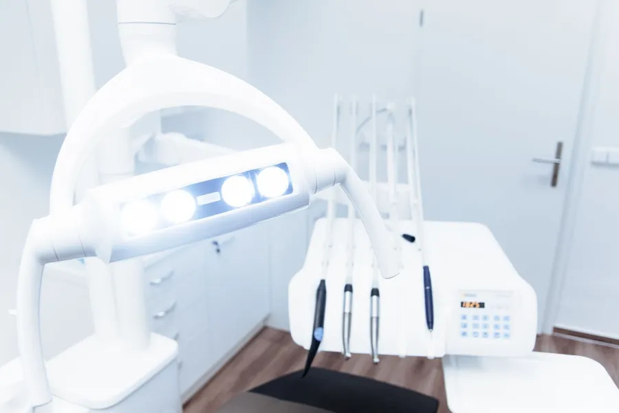

Günün sonunda da buradayız.
Oident Ağız ve Diş Sağlığı Polikliniği, Yenişafak - Cinkaya'da haftanın yedi günü 09.00'dan 22.00'ye kadar açık. Gününüzü seçin, saatinizi işaretleyin; mesajınız hazır.
Diş kontrolü için izin almak, işi erken bırakmak gerekmesin. Oident akşam 22.00'ye kadar, cumartesi ve pazar da açık.

Yedi gün, on üç saat.
Her satır bir gün, renkli şerit açık olunan saatler. Bugün işaretli; çizgi şu anki Türkiye saati.
İş çıkışı
18.00 ile 22.00 arası hafta içi her akşam; mesai bitince yol üstü kontrol.
Hafta sonu
Cumartesi ve pazar da 09.00 – 22.00. Okul ve iş günü dışında ailece gelmek isteyenler için.
Tek mesaj
Aşağıdaki randevu masasından gün ve saat aralığını seçin; WhatsApp mesajınız yazılır.
İlk kez gelecekseniz, adım adım.
Kliniğe ilk kez gelen biri ne olacağını bilmek ister. Bu bölüm yayında kliniğinizin kendi anlatımıyla yazılır; aşağıdaki akış genel bir örnektir.
 i.
i.Önce bir mesaj.
Arayın ya da WhatsApp'tan yazın: ne için geldiğinizi ve size uyan zamanı söylemeniz yeterli. Klinik size kesin saati bildirir.
 ii.
ii.Dinlemekle başlar.
Şikâyetiniz, geçmiş tedavileriniz ve kullandığınız ilaçlar konuşulur. Varsa eski röntgenlerinizi getirmeniz faydalı olur.
Muayene.
Ağız ve dişler kontrol edilir; hekim gerekli görürse röntgen ister. Her adımda ne yapıldığı size söylenir.

iv.Seçenekler ve plan.
Bulgular ve tedavi seçenekleri anlatılır, sorularınız cevaplanır. Karar sizindir; sonraki randevu size uyan güne ve saate göre ayarlanır.
Ne için gelebilirsiniz?
Genel bilgilendirmedir; size uygun tedaviyi muayenede hekiminiz belirler.
Örnek başlıklar: kliniğin kendi listesiyle değişir.
Her gün 09.00 – 22.00.
Gününüzü seçin, mesajınız hazır.
Önümüzdeki yedi gün, açık saat aralıklarıyla. Bugün geçmiş aralıklar kapalı görünür. Klinik size kesin saati WhatsApp'tan yazar.
Yenişafak - Cinkaya.
- Adres
- Yenişafak - Cinkaya, Denizli
Açık adres ve kat bilgisi yayında eklenir. - Çalışma saatleri
- Her gün 09.00 – 22.00
- Telefon / WhatsApp
- 0533 733 96 20
Kapıdan içeri.







Gelmeden önce.
Cevaplar örnektir: kliniğin kendi cevaplarıyla değişir.Bu akşam da açığız.
Her gün 09.00 – 22.00. Arayın ya da yazın; size uygun saati birlikte bulalım.